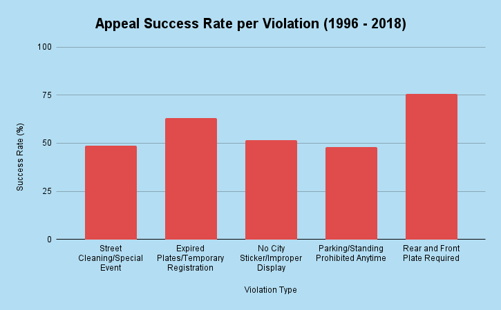

Chicago's ticketing often leads drivers into a spiral of debt. We are a nonprofit that helps drivers appeal their tickets and waive fees. The city often makes no money from these tickets while drivers who lose their licenses or vehicles are forced to find other modes of travel. By fighting your ticket, you can have the fee waived, save your vehicle/license, and help bring change to Chicago's streets.

These are the top 5 violation types in ward 15
These are the appeal success rates for the top 5 violation types. Only 4% of people contested their tickets, while 58% of them were successful.